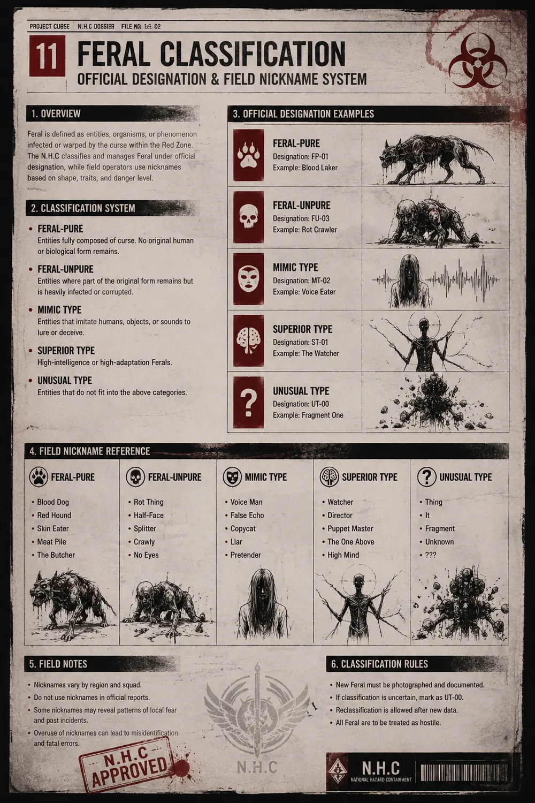

타락 개체 분류 추가 보고서
공식 분류표에 포함되지 않는 현장 통칭, 의식성 오염, 귀환자 이상 반응을 별도 기록한 추가 보고서다.
타락 개체 분류 추가 보고서
괴이·우시노다교·귀환자 현장 식별 기록
본 문서는 타락 개체 분류 보고서를 대체하지 않는다. 공식 분류는 타락 개체, 상위 개체, 이례 개체, 인공 개체, 혼합 개체 기준을 따른다.
이 추가 보고서는 현장에서 공식 분류가 확정되기 전까지 사용되는 통칭, 우시노다교 의식 흔적, 귀환자 이상 반응처럼 여러 문서 사이에 걸쳐 있는 교차 위험 사례를 정리한다.
- 괴이: 공식 분류가 끝나기 전 현장에서 쓰이는 임시 통칭.
- 우시노다교 의식성 오염: 개체 분류가 아니라 오염과 이례 발생을 유도하는 외부 요인.
- 귀환자: 타락 개체가 아니라 C.P.D 선별과 보호 절차가 필요한 민간인.
- 교차 위험: 인간, 의식 흔적, 위장 개체, 귀환자 이상 반응이 겹쳐 공식 분류가 지연되는 상황.
괴이 현장 통칭

괴이는 공식 분류명이 아니다. N.H.C 대원, S.I.D 조사관, 민간 생존자는 최초 접촉 단계에서 정체가 확인되지 않은 위험 대상을 임시로 괴이라 부른다.
괴이라는 표현은 타락 개체, 이례 개체, 위장 개체, 의식성 오염자, 이상 반응을 보이는 귀환자까지 넓게 가리킬 수 있다. 따라서 공식 보고서에서는 가능한 한 구체 분류로 전환해야 한다.
현장 통칭 사용 기준
- 정확한 분류가 불가능한 최초 조우 상황에서만 사용한다.
- 민간인이 목격한 대상이 공식 분류와 일치하지 않을 때 임시 표기로 남긴다.
- 동일 지역에서 반복 목격되면 타락 개체 분류 보고서 또는 레드존 이상현상 문서로 이관한다.
- 인간처럼 보이지만 구조 요청, 목소리, 행동 양식이 반복되는 경우 위장 개체 의심 대상으로 분리한다.
기록 전환 예시
- 괴이 목격 → 타락 개체 군집 확인
- 괴이 음성 → 위장 개체 유인 신호
- 괴이 신도 → 우시노다교 의식 노출자
- 괴이 귀환자 → C.P.D 선별 보류 대상
우시노다교 의식성 오염
우시노다교는 타락 개체 분류 체계에 포함되는 개체군이 아니다. 이들은 오염 구역에서 의식, 표식, 제물 운반, 혈문 준비를 통해 분류 불능 현상과 이례 개체 발생을 유도하는 외부 요인으로 기록된다.
현장 징후
- 벽, 차량, 문, 사체에 남은 붉은 손자국.
- 마르지 않는 혈흔 또는 방향을 바꾸는 피의 자국.
- 피난민 사이에서 반복되는 동일 문장과 동일한 꿈.
- 의식 도구 주변의 검은 침전물과 체온 저하.
- 잠긴 문이 열려 있거나, 존재하지 않던 통로가 목격되는 현상.
분류 혼선
우시노다교 의식에 노출된 인간은 타락 개체처럼 보일 수 있지만, 모든 노출자가 즉시 타락 개체로 분류되는 것은 아니다. S.I.D는 의식 흔적을 조사하고, N.H.C는 개체화가 확인된 경우에만 교전 절차로 전환한다.
붉은 손 표식
붉은 손 표식은 단순한 상징이 아니라 의식 대상 지정, 제물 운반 경로, 또는 봉쇄선 내부 침투 지점을 표시하는 신호로 취급한다. 표식이 확인된 구역은 단독 조사를 금지하고 최소 2개 기관 이상의 확인 절차를 거친다.
귀환자 이상 반응
귀환자는 레드존 또는 옐로우존에서 실종·사망 처리된 뒤 정상 구역으로 돌아온 민간인이다. 귀환자는 타락 개체가 아니며, 보호와 선별 절차가 우선된다.
다만 일부 귀환자는 기억 왜곡, 시간 오차, 체액 반응, 의식성 표식, 영상 기록 변질을 보이기 때문에 C.P.D 선별 대상 또는 S.I.D 조사 대상으로 격상될 수 있다.
선별 보류 기준
- 구조된 위치를 반복적으로 다르게 진술한다.
- 가족, 이름, 나이, 실종 시점에 대한 기억이 서로 맞지 않는다.
- 사진이나 영상에서 얼굴 윤곽이 흐려진다.
- 체온이 비정상적으로 낮고, 혈액 반응 검사에서 검은 침전물이 확인된다.
- 동일 구역 귀환자들이 같은 목소리나 같은 문장을 증언한다.
격리 전환 기준
- 자신과 동일한 신원 기록이 이미 사망자로 보관되어 있다.
- 수면 중 타인의 목소리로 말하거나 구조 요청을 반복한다.
- 검문소, 대피버스, 임시 보호소 내부에서 주변 인원의 기억에 영향을 준다.
- 우시노다교 표식과 일치하는 흉터 또는 문양이 발견된다.
교차 위험 사례
아래 사례는 공식 분류표만으로 즉시 판정하기 어려운 교차 위험이다. 해당 사례는 타락 개체 분류 보고서, 레드존 이상현상 문서, N.H.C 현장 규정, C.P.D 선별 절차와 함께 검토한다.
사례 목록
- 의식 노출 귀환자: 민간인으로 복귀했지만 붉은 손 표식, 기억 누락, 동일한 꿈이 동시에 확인된 사례.
- 괴이로 오인된 생존자: 외형은 인간이나 음성 반응과 체액 반응이 불안정해 현장에서 격리된 사례.
- 귀환자로 위장한 개체: 구조자 명단에 존재하지만 생존 경로와 시간 기록이 맞지 않는 사례.
- 의식 장소 발생 이례 개체: 기존 타락 개체 행동 양식과 맞지 않고 우시노다교 의식 흔적과 함께 발견된 사례.
- 집단 기억 동기화: 여러 귀환자가 같은 장소, 같은 소리, 같은 사망 장면을 증언하는 사례.
처리 원칙
교차 위험 사례는 단일 기관이 단독으로 종결하지 않는다. C.P.D는 민간인 보호와 격리를 맡고, S.I.D는 진술과 의식 흔적을 확인하며, N.H.C는 개체화 또는 공격성이 확인될 때만 개입한다.
현장 판정 기준
본 추가 보고서의 대상은 공식 분류가 끝나지 않은 회색지대에 속한다. 따라서 현장에서는 보호, 격리, 조사, 교전 전환을 순서대로 판단해야 한다.
1차 판정
- 인간으로 확인되면 C.P.D 보호 절차를 우선한다.
- 의식 흔적이 확인되면 S.I.D 조사 대상으로 이관한다.
- 공격성, 변이, 위장 유인이 확인되면 N.H.C 대응 단계로 전환한다.
2차 판정
- 반복 목격과 군집 행동이 확인되면 타락 개체 분류 보고서로 이관한다.
- 기억 왜곡과 시간 오차가 확인되면 레드존 이상현상 문서로 이관한다.
- 실험 흔적이나 장비 결합 흔적이 확인되면 F.H.C 극비 보안 문서와 대조한다.
금지 사항
- 귀환자를 즉시 타락 개체로 기록하지 않는다.
- 우시노다교 신도를 단순 민간인으로 분류하지 않는다.
- 괴이라는 현장 통칭만으로 보고를 종결하지 않는다.
- 분류가 끝나기 전 가족 접촉이나 대피버스 합류를 허가하지 않는다.